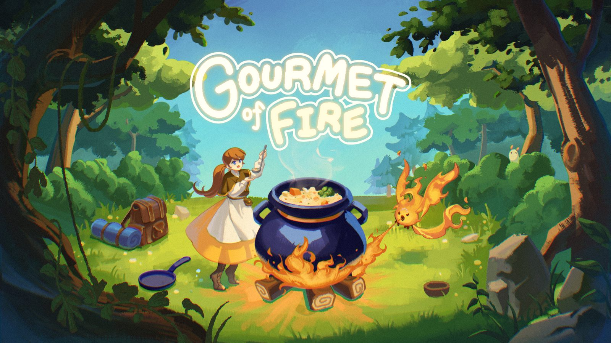
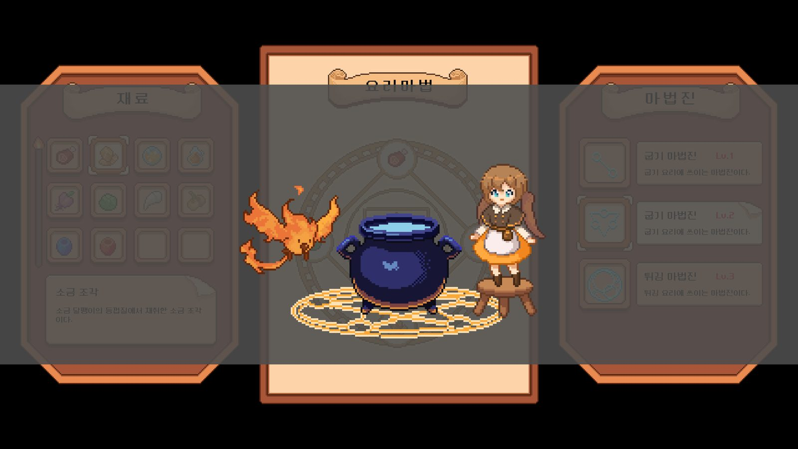
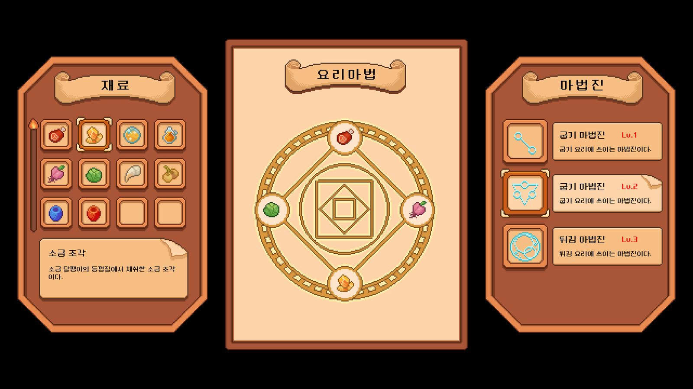
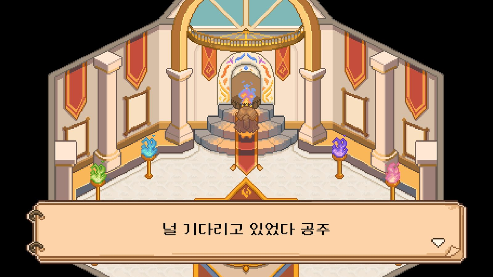
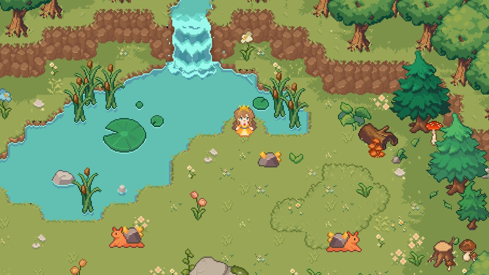
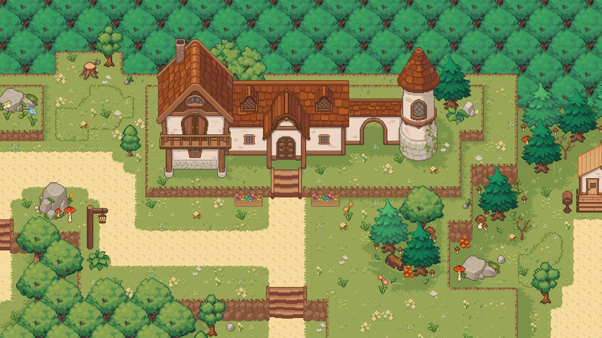
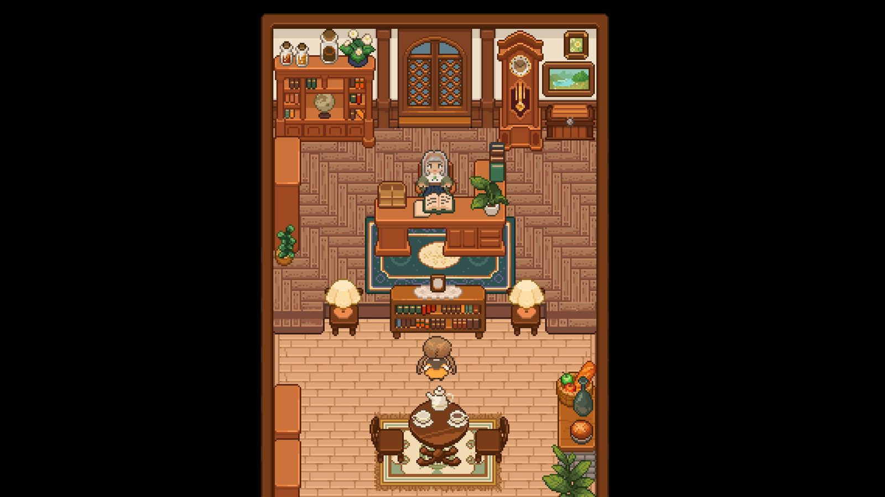

Summary
🏆 Excellence Award · Kyung Hee University Digital Contents Graduation Exhibition 2024- Genre
- 2D Top-down Cooking Adventure
- My Role
- Game Designer · Programmer · Team Lead
- Team Size
- 2 (me + 1 artist)
- Duration
- Jan – Nov 2024 (10 months)
- Engine
- Unity
- Language
- C#
The ancient flame that protects the Kingdom of Cuisine is fading. You play as the princess who can hear the song of fire, and leave the palace to save it. In most games cooking is a side feature for healing or buffs. Here, cooking is the core of the adventure.
What I Did
Game & Level Design
- Designed and directed the entire game as team lead: core loop, worldbuilding, and story.
- Owned gameplay and level design for the field, village, and in-house levels.
- Set the design goal: make cooking the main purpose of the adventure, not just a side system.
Programming (Unity / C#)
- Implemented the core gameplay mechanics in Unity C#, including the magic-circle cooking system.
- Designed and built the UI: ingredient inventory, cooking table, and magic-circle inventory.
Bridging Art and Code
- Helped the artist work inside our pipeline (Git, Sourcetree, sprite sizes) by speaking both art and programming.
- Also made the logo and concept art.
Postmortem
✅ What went well
- We finished a complete game, not just a prototype.
- It won the Excellence Award at the graduation exhibition.
💡 What I learned
- My first project using C# intensively.
- How to set priorities: what I want to build vs. what I can build vs. what the game needs.
🔧 What I'd improve
- Pre-production took too long because we were inexperienced. Now I know where to focus, so I can make it shorter.